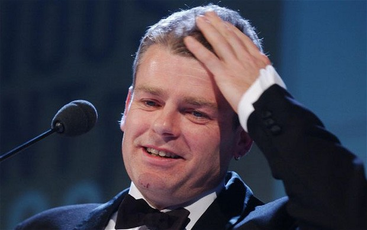

© 2012 The Hidden Aspie | Content - Valerie Carlin | Design & Website - Jan Szafranski | Site Contents
Share this page

Mark Haddon - don't use Curious Incident... as an autism "textbook"
Mark Haddon
The author of 'The Curious Incident of the Dog In The Night-Time' (named after a quote from a Sherlock Holmes' story) has expressed reservations about the novel being used as an autism “textbook” by social workers and police forces.
Mark Haddon’s story about a 15-year-old boy with behavioural problems was a runaway best-seller when it was published in 2003. The main character, Christopher, is mathematically gifted but unable to interpret human emotions or countenance being touched and follows his quest to solve the mystery of the death of his neighbour's dog. The book chronicles his journey not just in the 'crime' but also his mind, social interactions, and discovery of his family secrets. Although the character has similar symptoms as someone on the AS scale, Haddon has always maintained that he was not. The main reason being that he had no expertise on AS, and that the book told from the first person narrative would not have been possible had the character had Asperger's. However, the conflation began when the publishers added to the dust jacket that the character was Aspergic... despite there being no reference nor intention within the novel.